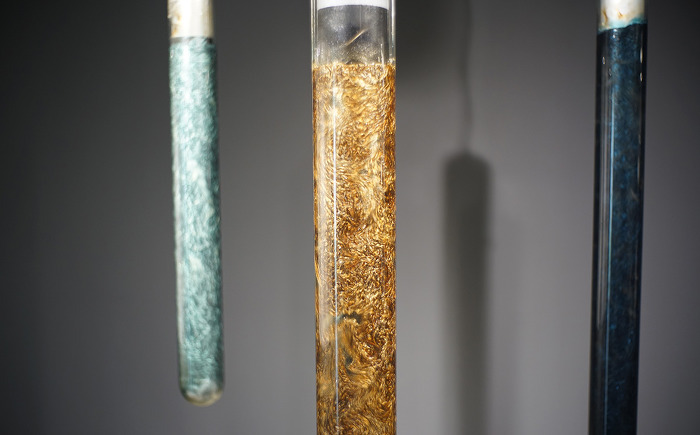

김윤철
Yunchul Kim
Yunchul Kim's website, about page.
Born in 1970, graduated from the Department of Composition at the Chugye Arts College and Audio Visual Media at the Kunsthochschule für Medien Köln.
In addition to Korea, 15 individual exhibitions were held in Germany, Slovenia, and the United Kingdom. He also submitted to a number of group exhibitions and planning exhibitions.
Yunchul Kim's website, work archive page.
“I majored in composition in college. And then I started to deal with electronic music, and in the process, I came across new media, new media, and I met people who were dealing with visual media. It was not difficult to move on to visual art during the process as I encountered performance or performing arts and joined them and carried out various activities.”
“Another aspect was the situation in the late '90s. At that time, Europe was beginning a new trend, such as projection and software and network art. I was studying in Germany at this time, so I was able to share that era. Then at some point, the work I've been doing so far became boring to myself, and I wanted to do something different, something I could touch.”
“I went to the woodwork to do that, to touch the wood, to experience materials that I had never tried before, and gradually came to the idea that I wanted to deal with materials that I could control myself. To do this, I looked for electromagnetism and chemistry, and I was interested in various fields, and then I was interested in hydrodynamics and physics.”

Triaxial Pillars, 2010-2013
Glass Cylinders, Aluminum, Photonic Crystal, Neodymium, Motor, Computer, etc.
“One day, two of you came to me and asked, “What are you?” One person (Astrophysicist Dr. Jaime E. Forero-Romero) introduced me as a researcher who studies the surface matter of the sun in a lab at the observatory and said that what I'm doing is the same as what you're doing. And that's what they did at that time: Triaxial Pillars.”
“Later, he invited me to the Leibniz Institute for Astrophysics Potsdam/AIP in Berlin and showed me his research, which was really similar to what I did. But the other point was that his methodology was to simulate everything by data, and I learned that shape and image and feeling were important, not data.”
“He then suggested doing something together, and he and the art historian Dr. Luca Ayala, who majored in art history, created the 2011 project group Fluid Skies, and spent a year together talking about astronomy, physics, art history, and various media every week. At some point, I wondered if we could do something in common, and that's when we started something convergent.”
As his experiences on field, his work is deeply related to science with hyper material field.
And he is one of a few media artists with engineering capabilities that make all structures by his own.
Matter is not an object separate from the world or observer, but a system of cosmic continuity that continuously interacts with and penetrates them. This perspective is in contact with several Western thinkers who reject human-centered and dichotomous metaphysics, such as Bruno Latour's agent-network theory, Quentin Meillassoux's speculative realism, and Gilbert Simon's active material concepts.
Hello, World!(2005), his early work,
Bronze, Mike, Speaker, Monitor, Analogue Memory
WHITEOUT (2014), his mid-work,
Hydrogel, glass, polyvinyl acetal
Chroma V (2022), his latest work,
Acrylic, aluminum, polymer, LED, Motor, microcontroller
Argos – the Swollen Suns (2022), his latest work,
Geiger-Müller tube, glass, aluminum, microcontroller
Yunchul Kim is a South Korean artist who is a creator of sculptures with materials from advanced techniques, and composer of electroacoustic music. He creates complex works born from an interconnection of scientific, mathematical, physical, astronomical, philosophical and anthropological knowledge.